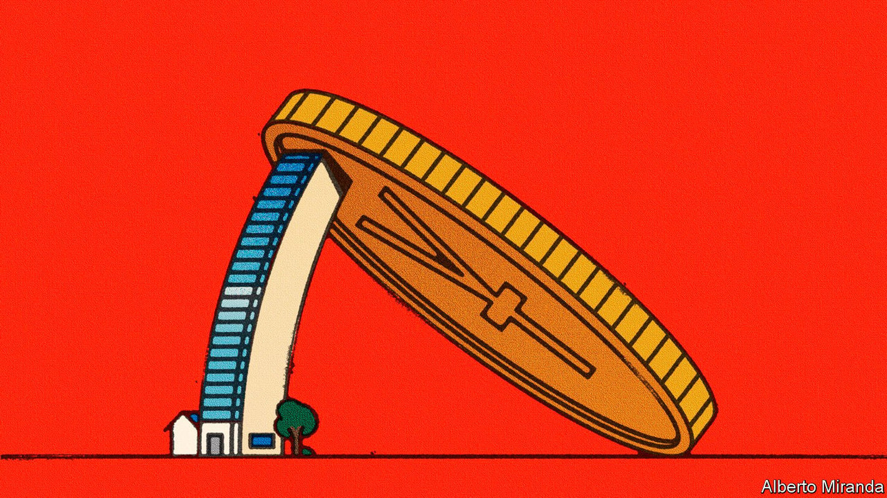
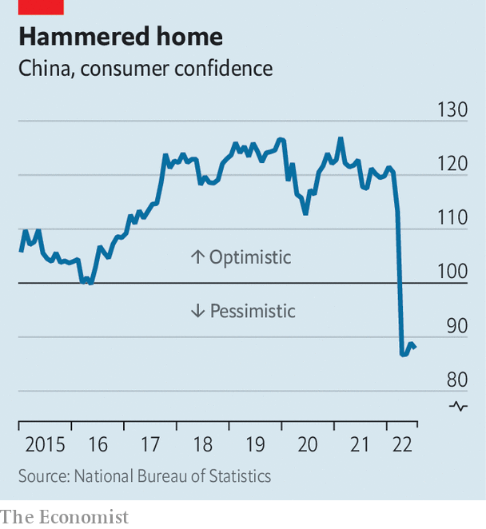
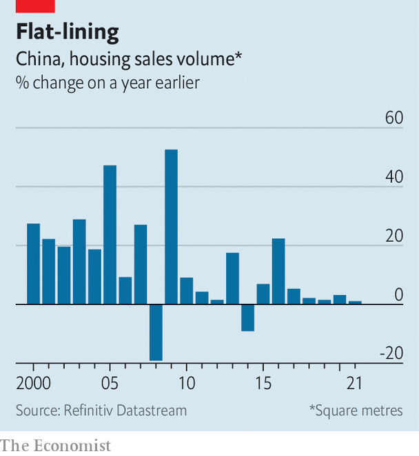
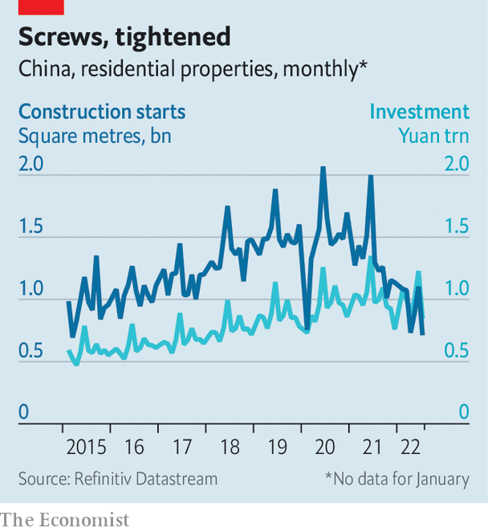

China’s Ponzi-like property market is eroding faith in the government
Its meltdown could scarcely come at a worse time for Xi Jinping

The 120km train ride between the cities of Luoyang and Zhengzhou is a showcase of economic malaise and broken dreams. From the window endless, half-built residential towers pass one after another for the duration of the hour-long journey. Many of the buildings are near completion; some are finished and have become homes. But many more are skeletons where construction ceased long ago. Developers have run out of cash and can no longer pay workers. Projects have stalled. Families will never get their homes.
Listen to this story.Enjoy more audio and podcasts on iOS or Android.
Listen to this story
Save time by listening to our audio articles as you multitask

The train ride through China’s heartland helps to explain one of the country’s biggest crises in recent memory: the public’s loss of confidence in the government’s economic model. For decades the property industry has been symbolic of China’s rise. Private entrepreneurs have made vast fortunes. Average people have witnessed their net worth soar as home values trebled. Local governments have filled their coffers by selling vast tracts of land to developers. An astonishing 70% of Chinese household wealth is now tied up in real estate.
To undermine trust in this model is to shake the foundations of China’s growth miracle. With sweeping covid-19 lockdowns and a crackdown on private entrepreneurs, this is happening on many fronts. But nowhere is it clearer than in the property industry, which makes up around a fifth of gdp. New project starts fell by 45% in July compared with a year ago, the value of new home sales by 29% and property investment by 12%. The effects are rippling through the economy, hitting furniture-makers and steelworkers alike. The crisis comes at a critical time for Xi Jinping, China’s leader, who will probably be granted a third term at a party congress in October.
Reviving trust in the system is crucial for Mr Xi and the Communist Party. Yet the government’s response has been disjointed and slow, with officials seemingly overwhelmed by the complexity of the situation. To regain faith in the housing market, the public needs to see stalled projects finished. Meanwhile, construction firms and workers need to be reimbursed, and investors paid back on their fixed-income products. All this must be done without reinflating the unsustainable debt bubble that the property market has become.
The housing crisis has two immediate causes. The first is a crackdown on the property industry’s excesses. Since August 2020 officials have restricted developers’ ratios of liabilities to assets, net debt to equity and cash to short-term debt, in a policy known as the three red lines. This has forced many to stop unsustainable borrowing and sell down assets, severely limiting their ability to continue building.

China’s zero-covid policy is a second blow. The central government has forced dozens of cities to lock residents in their homes for days, and sometimes weeks, on end when covid cases are discovered. At the time of writing, the megacities of Chengdu and Shenzhen are fully or partly locked down. The shutdowns have stopped people from viewing homes. They have also had an impact on the consumer psyche. Entrepreneurs fear the sudden closure of their businesses. Employees worry about being laid off. This sort of trepidation does not encourage homebuying.
The result is a crunch. China’s developers need to sell homes long before they are built to generate liquidity. Last year they pre-sold 90% of homes. But without access to bonds and loans, as banks cut their exposure to the property sector, and with sales falling, the Ponzi-like nature of the property market has come into full view.
Evergrande, the world’s most indebted developer, defaulted in December. An effort to restructure its offshore debts, intended as a model to follow, missed an end-of-July deadline. At least 28 other property firms have missed payments to investors or gone into restructuring. Trading in the shares of 30 Hong Kong-listed developers, constituting 10% of the market by sales, has been frozen, according to Gavekal, a research firm. In early August half of China’s listed developers traded at a price-to-earnings ratio of less than 0.5, the level that Evergrande traded at four months before it defaulted, notes Song Houze of MacroPolo, a think-tank.
Firms that just months ago were considered safe bets are now struggling. Earlier this year analysts dismissed concerns that Country Garden, China’s biggest developer by sales, would come under pressure. But on August 30th the firm revealed that profits for the first half of the year had fallen by almost 100%. The property market has “slid rapidly into severe depression”, it noted. The firm’s difficulties indicate that problems are no longer specific to certain developers. The entire industry is at risk.
Potential homebuyers have dropped out of the market. Far more worrying, though, are the millions waiting, often for years, for homes for which they have paid. Just 60% of homes that were pre-sold between 2013 and 2020 have been delivered.
Mr Liu, who has asked to be referred to by his family name, bought a flat in Zhengzhou in 2014, with an initial 250,000 yuan ($40,000) down-payment. The home was scheduled to be finished in 2017. But it never was. Instead, he rented a flat, eventually buying another in an old building. It is hardly the life he imagined. Mr Liu never started paying his mortgage and has engaged in endless discussions with the property developer about getting back his down-payment. “There’s no use,” he says.
Analysts have known of these problems for years, but had thought the authorities would not allow protests. Two years ago a report by pwc, an accounting firm, noted that when building stalls, the “unco-ordinated households normally have little ability to influence things”. This calculation has been turned on its head. A movement to collect data on the refusal to pay mortgages has taken officials by surprise. On July 12th volunteers began sharing data on social media. So far about 350 boycotts have been identified; analysts believe this is a fraction of the true number. State censors try to remove references to the information, but knowledge appears to spread nevertheless. As it does, others are persuaded to join in.
Investors and potential homebuyers are now watching with unease as the state puts together its response. For more than a decade cities have wielded a long list of rules and incentives to fine-tune real-estate markets, usually to reduce speculation and cool prices. These included limits over access to mortgages, as well as on who can buy homes and how many they can buy.
Cities are now loosening these rules. Between May and July municipal governments announced 304 individual measures to restore confidence, according to cicc, a Chinese investment bank. Zhengzhou, at the centre of the protests, was an early mover. In March it announced 18 actions to stimulate demand, including measures to make it easier to get mortgages and to allow families with elderly members to buy flats if they move to the city.
These have attracted attention—not because they have revived demand but because they seem to contradict central-government policy. In a video circulated on social media in August, a local Communist Party chief in Hunan province was seen calling on people to buy as many homes as possible: “Did you buy a third one? Then buy a fourth.” The message clashes with the one from Mr Xi himself, who has warned that “homes are for living in” and certainly not for speculative investment.
Local governments have also been encouraged by regulators and officials to create bail-out funds to invest in unfinished housing projects, and eventually to help deliver homes. Zhengzhou has allocated 80bn yuan ($12bn) to the cause. The thinking goes that local funds will be better suited to conditions on the ground.
Zhengzhou is also trying perhaps the most aggressive plan yet. City officials have issued a directive to developers that says all stalled construction must restart by October 6th. Insolvent companies that cannot do so must file for restructuring to bring in new investment, and repay down-payments made by homebuyers such as Mr Liu. Failure to do so could result in developers being investigated for embezzlement and other serious crimes.
For their part, policymakers have repeatedly cut mortgage rates since mid-May. To guarantee the supply of homes, the central government is fully guaranteeing bond issuance by private developers, shifting the risk to the state. Longfor, a struggling firm, priced a 1.5bn-yuan bond at a 3.3% coupon rate on August 26th, far below the market rate. This was possible solely because the bond was underwritten by China Bond Insurance, a state agency. More such issuance is planned to deliver liquidity to developers the government views as higher quality. It is the beginning of a programme to pick winners.
Another prong of state support takes the form of direct liquidity. On August 22nd the central bank and finance ministry said that they would back special loans from state-directed policy banks to finish pre-sold homes. The size of the programme has not been disclosed, but Bloomberg, a news service, reported that 200bn yuan would be made available.
This public spending is a double-edged sword. On the one hand, it will help deliver homes and restart mortgage payments, taking pressure off banks. But at the same time the cash is filling a hole created by bad local governance and dubious property developers. “That simply represents money that can’t be spent on stimulus elsewhere,” notes Alex Wolf of JPMorgan Chase, a bank.
Zhengzhou’s efforts to encourage new buyers since March have fallen flat. Conditions have continued to deteriorate, suggesting that tinkering with city policies is not enough. Local bail-out funds also look flimsy. On paper several cities have hefty pots, but they rely on local-government financing firms that are strapped for cash. Analysts are watching Zhengzhou’s attempt to restart all construction within a month, but many question if the necessary funds are available. The measures could unleash collapses among smaller developers, causing panic and financial turmoil.

Investors have more hope in the central government, but its response has so far failed to match the scale of the crisis. The 200bn-yuan lending programme may account for just 10% of what is needed to complete all unfinished homes. About $5trn-worth of residential property has been pre-sold since 2020, reckons Mr Song of MacroPolo, making a bail-out of even a fraction of these homes incredibly costly.
The central government has more levers to pull. Larry Hu of Macquarie, an investment bank, says a number of measures can be snapped into place. These include temporarily easing the three red lines policy, or vowing to act as a lender of last resort for all stalled projects. The latter, while expensive, is fully within the central government’s financial wherewithal.
The debate now focuses not on whether the central government can restore confidence, but on how far it is willing to go. The crackdown on leverage was meant to punish firms that had taken on too much debt. A bigger bail-out will encourage more developers to ask for assistance, pushing the government to subsidise more of the property sector, writes Allen Feng of Rhodium, a research firm: “quite the opposite of what was intended with the ‘three red lines’”.
The campaign against leverage was meant to bring the sector in line with demand. Officials have long acknowledged that developers were building too much. About 70% of homes sold since 2018 were bought by people who already owned one, estimates JPMorgan. Restricting debt was supposed to force firms to adjust to reality.
Demand is likely to fall as China’s population growth slows. Home sales reached 1.57bn square metres in 2021, more than twice as high as in 2007. But Chen Long of Plenum, another research firm, projects that real annual demand will fall to 0.88bn-1.36bn square metres over the next decade, as the demographic shift takes hold and urbanisation slows. Reinflating the market means propping up the bubble.
The government’s balancing act is fraught with risk. In mid-October the party congress will happen as cities lock down. Mortgage boycotts will rumble on, and possibly grow. Confidence in China’s economic foundations could cross a threshold, beyond which it becomes far more difficult to recover. Mr Xi’s third term will start in inauspicious circumstances. ■
For more expert analysis of the biggest stories in economics, business and markets, sign up to Money Talks, our weekly newsletter.